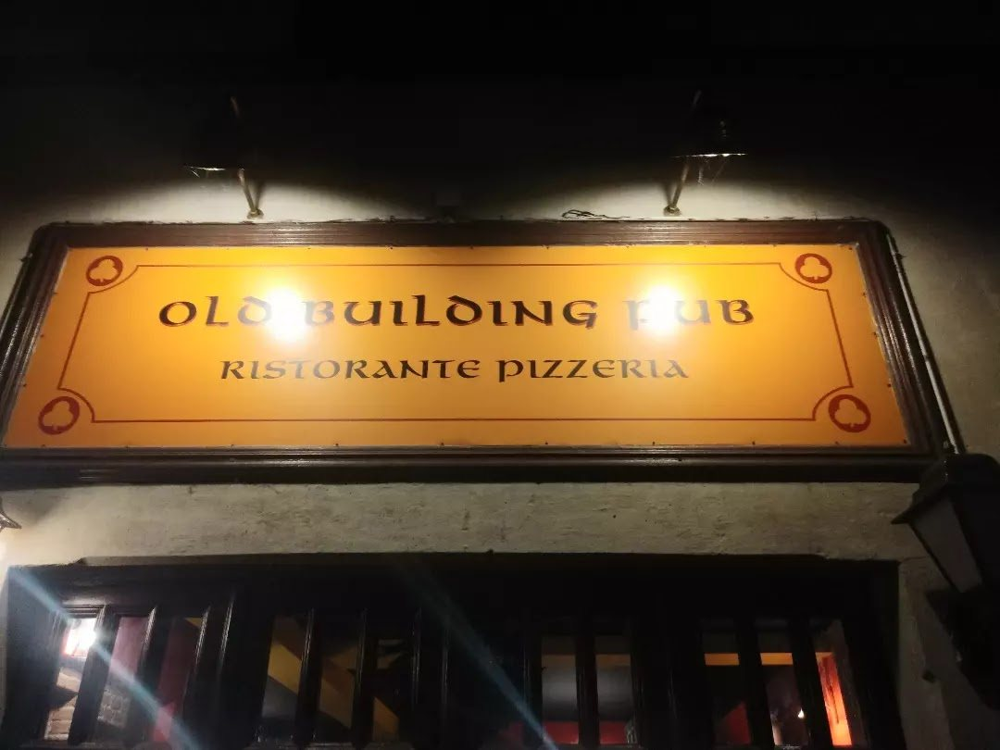
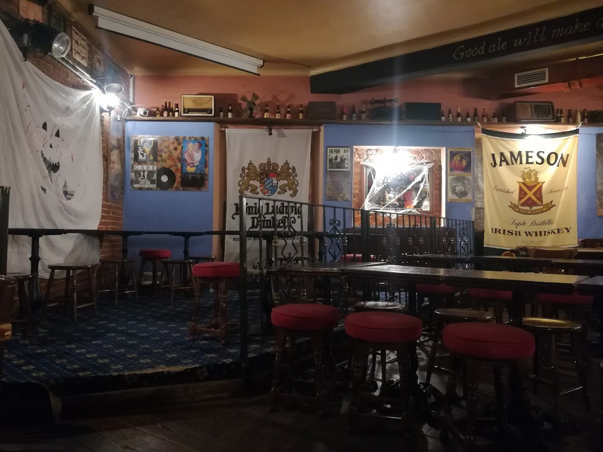
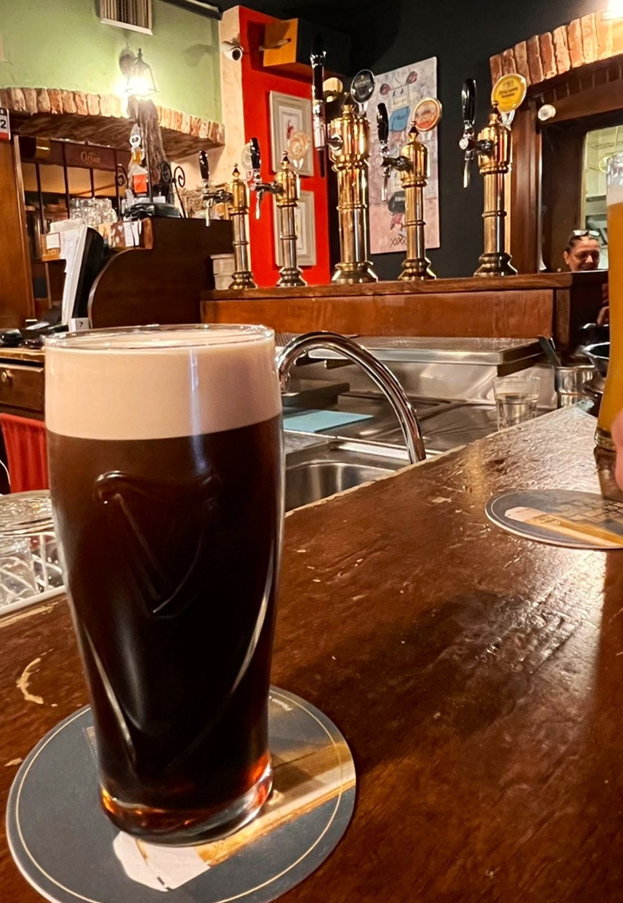
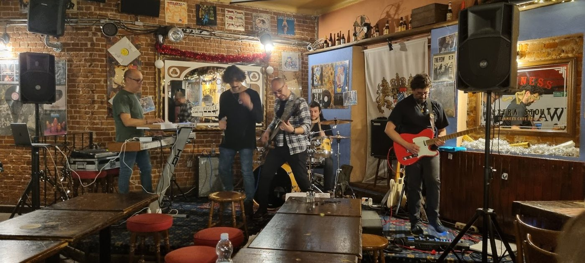
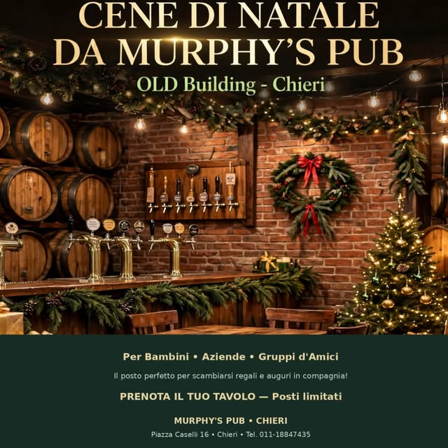
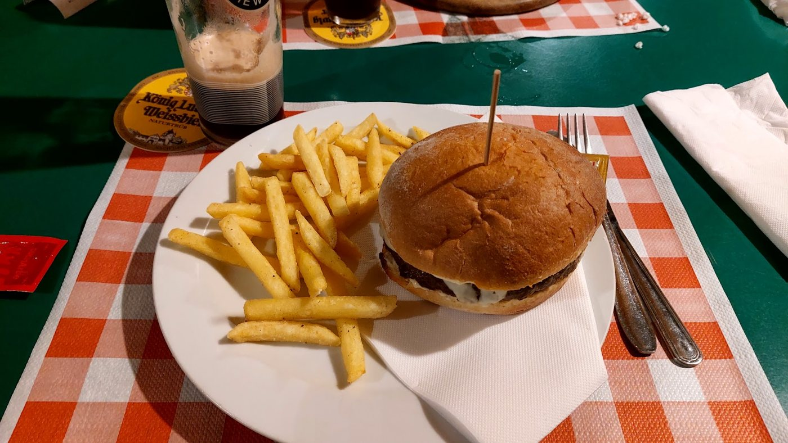
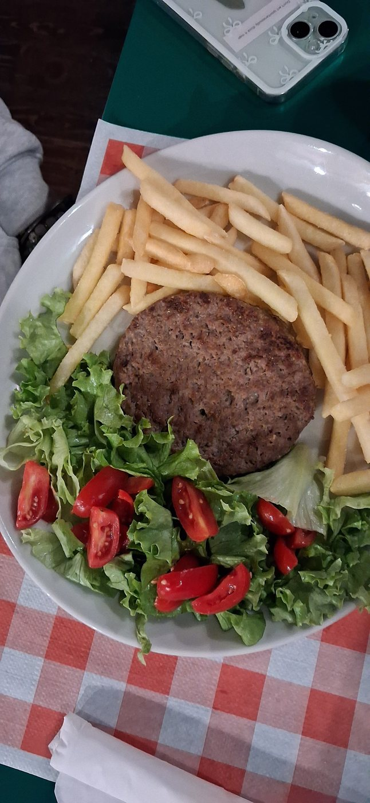
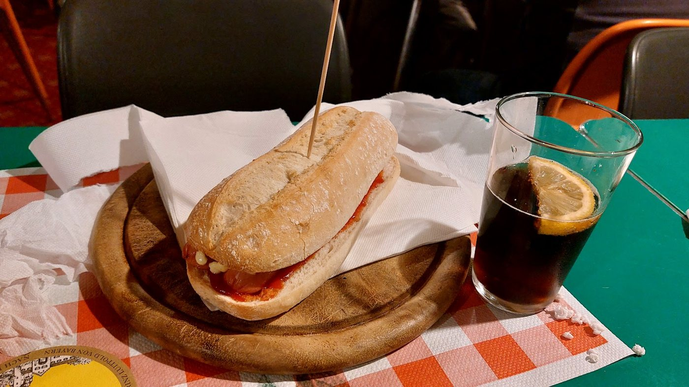
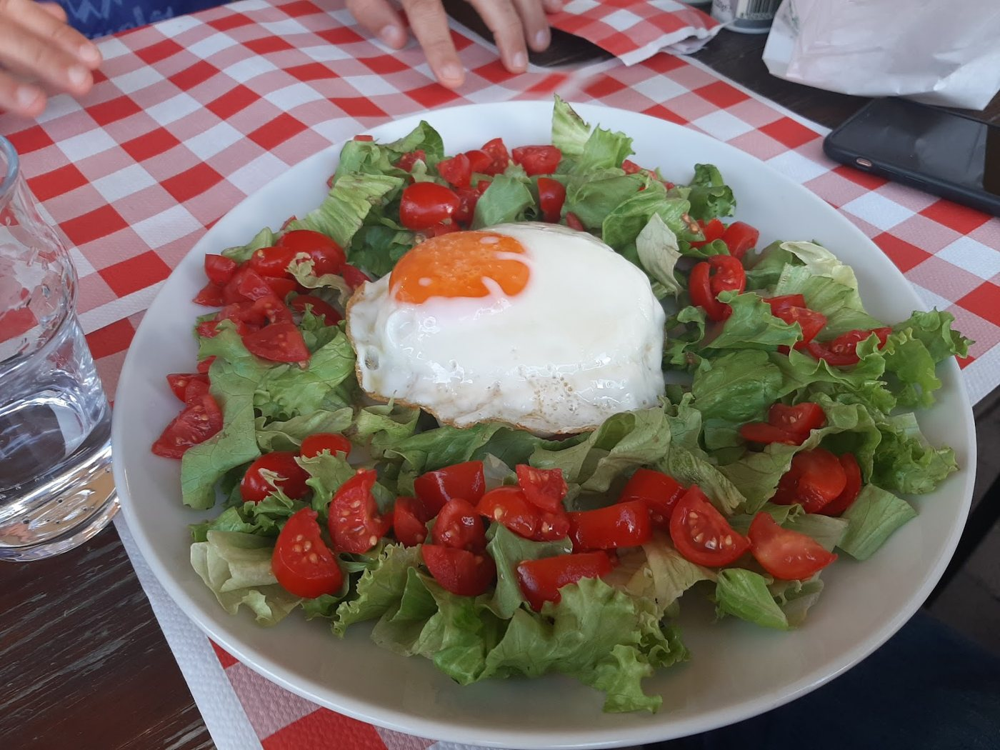

Anni 90 e 2000
In console Mimmo DJ, con le hit che sapete tutti a memoria.

Una Guinness versata come si deve, una pizza o un piatto caldo, e una serata in compagnia con buona musica.
Prima versata, a 45 gradi…
L'Old Building apre a Chieri a fine estate del 1999, con l'idea semplice di un pub all'irlandese: legno, birra buona, cucina vera e gente che si conosce per nome. Oggi è pub, ristorante e pizzeria, e la sera si riempie di musica.


Ogni mese pubblichiamo il calendario sui nostri social. Queste sono le serate che non mancano mai.

Musica dal vivoIn console Mimmo DJ, con le hit che sapete tutti a memoria.
Serate da cantare tutti insieme, come quella con gli Akuakiara sulle canzoni di Lucio Battisti.
Halloween e le feste dell'anno, sempre con un DJ set.

Il posto giusto per scambiarsi regali e auguri in compagnia. Posti limitati: chiamateci per tempo.




E se l'irlandese non lo parlate, va benissimo anche il piemontese.
Piazza Caselli 16 · 10023 Chieri (TO)
Aperti la sera, dalle 19.
Per le serate e le cene di Natale i posti sono limitati: meglio chiamare.